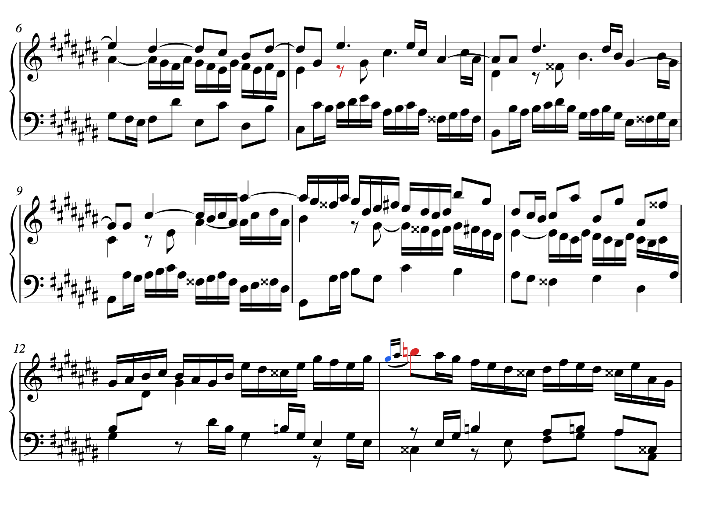
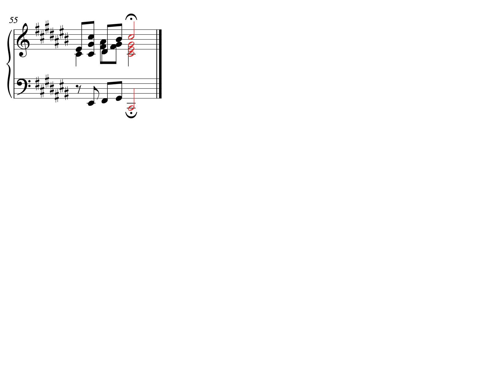
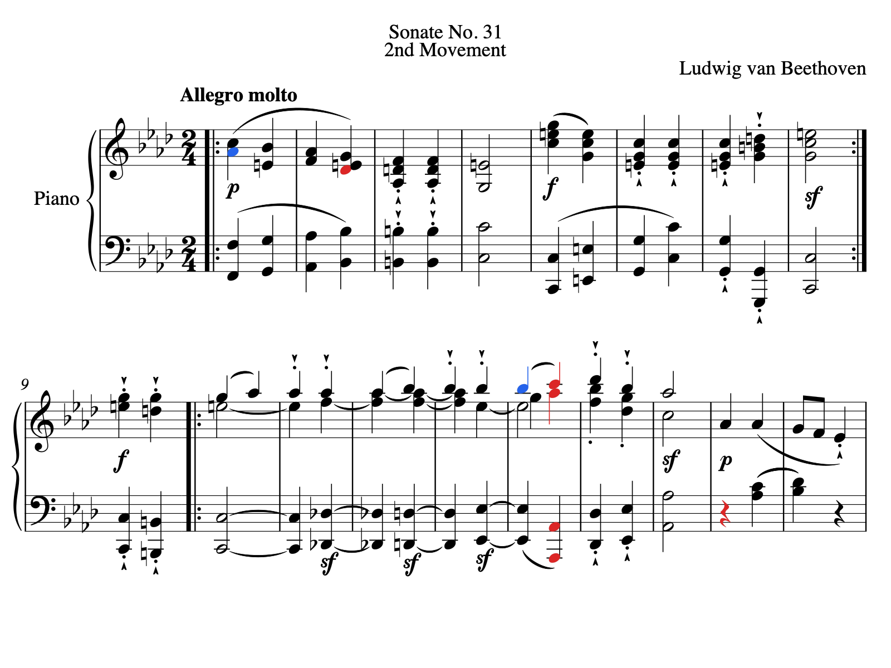
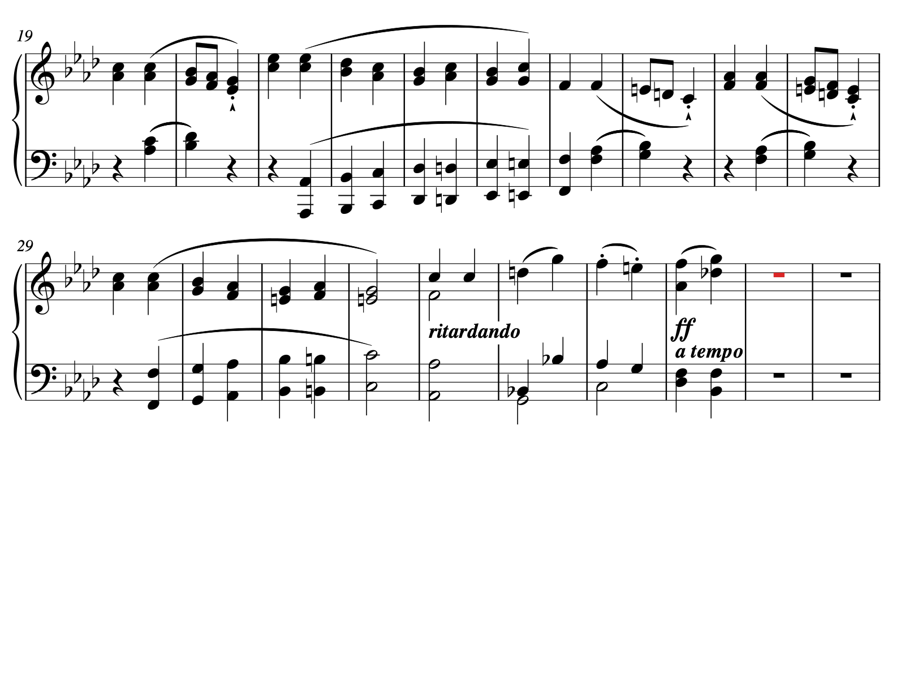
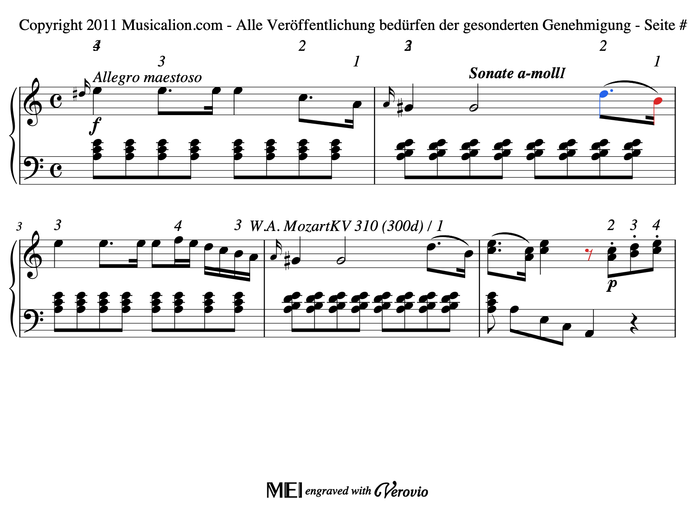
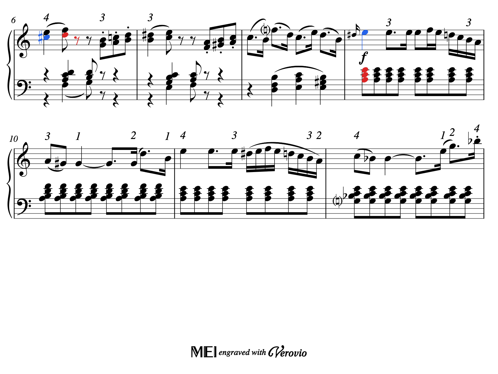
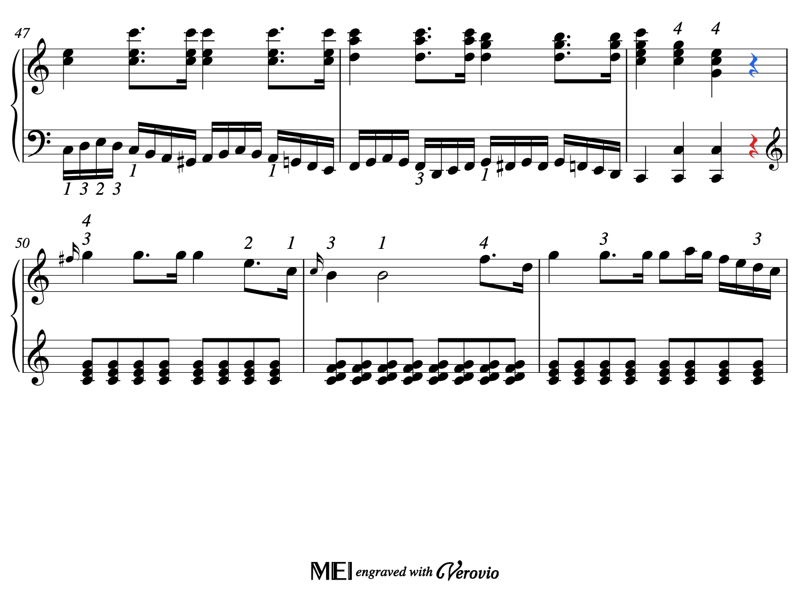

프레이즈 후보 악보 검수
빨강·파랑 음표/쉼표는 후보의 근거 기호입니다. 표시한 음표 뒤의 경계 또는 쉼의 시작을 후보로 저장했습니다. 색칠 자체가 프레이즈 확정을 뜻하지 않습니다.
기준은 쓰인 악보의 quarter 위치이며, 반복 회차는 별도 연결표에 있습니다. 같은 slur가 짧은 연결·동기·프레이즈 중 무엇에 해당하는지 주변 선율과 다른 성부를 함께 확인하세요.
Bach/Fugue/bwv_848 · page 2
- case_01 — first_internal_voice_rest; quarter 25; P1:staff=1:voice=2; voice_rest
- case_04 — first_unusable_slur; quarter 48; P1:part; slur_diagnostic:nonpositive_onset_span

확대 가능한 원본 SVG
Bach/Fugue/bwv_848 · page 8
- case_02 — first_harmonic_closure; quarter 220; P1:part; harmonic_closure_hint
- case_03 — first_combined_evidence; quarter 220; P1:staff=1:voice=1; notation_fermata

확대 가능한 원본 SVG
Beethoven/Piano_Sonatas/31-2 · page 1
- case_05 — first_internal_voice_rest; quarter 32; P1:staff=2:voice=5; voice_rest
- case_06 — first_paired_slur_end; quarter 4; P1:staff=1:voice=1; slur_end
- case_08 — first_harmonic_closure; quarter 28; P1:part; harmonic_closure_hint
- case_09 — first_combined_evidence; quarter 28; P1:staff=1:voice=1; slur_end

확대 가능한 원본 SVG
Beethoven/Piano_Sonatas/31-2 · page 2
- case_07 — first_global_silence; quarter 72; piece; global_notated_silence

확대 가능한 원본 SVG
Mozart/Piano_Sonatas/8-1 · page 1
- case_10 — first_internal_voice_rest; quarter 18; P1:staff=1:voice=1; voice_rest
- case_11 — first_paired_slur_end; quarter 8; P1:staff=1:voice=1; slur_end

확대 가능한 원본 SVG
Mozart/Piano_Sonatas/8-1 · page 2
- case_13 — first_harmonic_closure; quarter 65/2; P1:part; harmonic_closure_hint
- case_14 — first_combined_evidence; quarter 43/2; P1:staff=1:voice=1; slur_end,voice_rest

확대 가능한 원본 SVG
Mozart/Piano_Sonatas/8-1 · page 9
- case_12 — first_global_silence; quarter 195; piece; global_notated_silence

확대 가능한 원본 SVG
입력: 고정 nASAP MusicXML. 원본 악보 및 포함된 출처 문구를 보존했으며 연주 feature·음원은 사용하지 않았습니다.